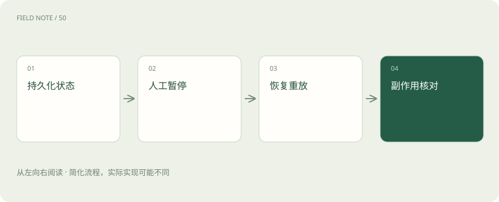

先读哪些知识
先用一个类比理解
类比只帮助建立直觉，不等同于技术的完整机制。
一图看懂

崩溃发生在哪里
设想助手已经向工单系统提交回滚任务，却在保存本地状态之前断电。恢复时只看检查点，会以为提交尚未发生；再次提交就得到两张任务单。这个窗口不会因为框架有持久化就自动消失。
先区分“运行时记得做到哪”与“业务系统究竟做成什么”。两份事实可能短暂不一致。恢复设计的目标，是让这种不一致能够被识别、对账并收敛，而不是靠提示词保证永不出错。
恢复还应记录执行策略的版本。流程升级后，同一检查点中的字段可能已不满足新节点的要求。上线前应决定旧任务继续使用旧流程、进行显式迁移，还是转人工接管；直接让旧状态进入新逻辑，可能在恢复路径产生正常新任务不会触发的错误。
恢复需要稳定身份
为一次业务操作生成稳定的操作标识，例如工单号与审批版本的组合。重试携带相同标识，由目标业务服务拒绝重复执行或返回已有结果。每次重试随机换标识，相当于主动放弃去重，不能称为幂等。
目标系统还应验证同一操作标识对应的参数相同。如果第一次要求退一百元，第二次带同一标识要求退两百元，必须报冲突。否则去重记录会掩盖参数漂移，留下难以解释的账目。
中断不等于等待函数
人工审批是持久化的业务暂停，而非让一个进程睡上三天。保存待审内容、审批版本和任务身份后释放执行资源。恢复必须找到原来的线程及检查点，同时保留审批者和审批对象之间的对应关系。
待审界面需要展示足以做决定的证据、目标和变更差异。只显示“是否继续”无法形成有效授权。拒绝与撤回也应进入状态，而不是仅在聊天里留下一句自然语言回复。
图解：超时后的结果核对
节点可能重新执行
恢复语义下，中断所在节点的部分代码可能再次运行。中断前的邮件、写表和扣费都可能重做。将不可逆操作放入有明确结果记录的任务边界，并把准备、审批和执行拆开，比假设某行代码只会跑一次更可靠。
不要根据屏幕上已经显示过“正在提交”判断副作用完成。界面事件、运行时日志与业务成功回执是不同证据；只有目标系统认可的结果，才可以作为动作已完成的依据。
重试要分类
网络连接失败可能适合退避重试；参数错误、无权限和业务拒绝通常需要修正条件。超时尤其危险，因为客户端不知道服务端是否已经完成。应先按操作标识查询结果，再决定重发，不能把所有异常统一重复五次。
为重试设置总时限和失败终点也很必要。无限退避会把一个明确失败的任务伪装成长期处理中，用户既不知道是否需要接管，也无法判断资源是否仍被占用。
审批会变旧
周一批准的回滚方案到了周三可能失效：部署版本已变，目标配置也变了。恢复前重新核对目标版本和审批有效条件。审批的是具体动作及其参数，不是给 Agent 一张长期通行证。
如果参数改变，应生成新审批版本，并让旧批准失效。审批恢复时附带版本校验，可以防止“批准的是小范围变更，执行时却使用新生成的大范围参数”这一类错配。
存储与副作用分工
检查点数据库负责记录执行状态，目标系统负责执行其业务操作，审计记录解释双方如何对应。跨系统没有天然共享事务时，可使用操作登记、对账和补偿机制。补偿也可能失败，因此补偿状态本身需要被追踪。
例如成功创建回滚任务但后续记录失败，可在恢复时查询已存在任务并补写状态；若业务允许撤销，也可转人工决定。自动补偿不是万能撤回键，有些动作只能追加纠正记录。
图解：审批失效的恢复
何时不用恢复图
只读问答失败后从头查询往往更简单。只有任务耗时长、人工参与多、外部副作用多时，才值得维护恢复协议。验收必须主动制造“服务已成功但客户端超时”这一故障，普通成功样例无法验证重复执行风险。
还要验证进程重启后仍能找到原线程，审批重复点击不会重复执行，撤销后恢复会被拒绝。恢复能力不应仅用开发机里一次顺利的暂停与继续来证明。
放在一起对比
| 情况 | 不应直接做什么 | 正确处理方向 |
|---|---|---|
| 网络连接失败 | 无限重试 | 分类、退避与总时限 |
| 提交后回执丢失 | 生成新操作标识重发 | 用原标识查询结果 |
| 恢复时参数改变 | 沿用旧审批 | 核对审批版本并重新批准 |
| 跨系统状态不一致 | 宣称全部失败 | 对账、补写或人工补偿 |
放进真实场景
为一次业务操作生成稳定的操作标识，例如工单号与审批版本的组合。重试携带相同标识，由目标业务服务拒绝重复执行或返回已有结果。每次重试随机换标识，相当于主动放弃去重，不能称为幂等。
别踩这个误区
想一想
外部服务已经执行成功，进程却没保存检查点；恢复时如何避免重复？
使用稳定业务操作标识，让目标服务幂等处理，并在结果不确定时先查询已执行结果。检查点无法替代外部系统的业务记录。
关联阅读
资料与边界
本文为原创知识讲解。类比和图示经过简化；示例数字不代表实测或报价。整理日期：2026-11-04。文末列出对应技术的原始资料，具体功能与版本支持请以原文为准。